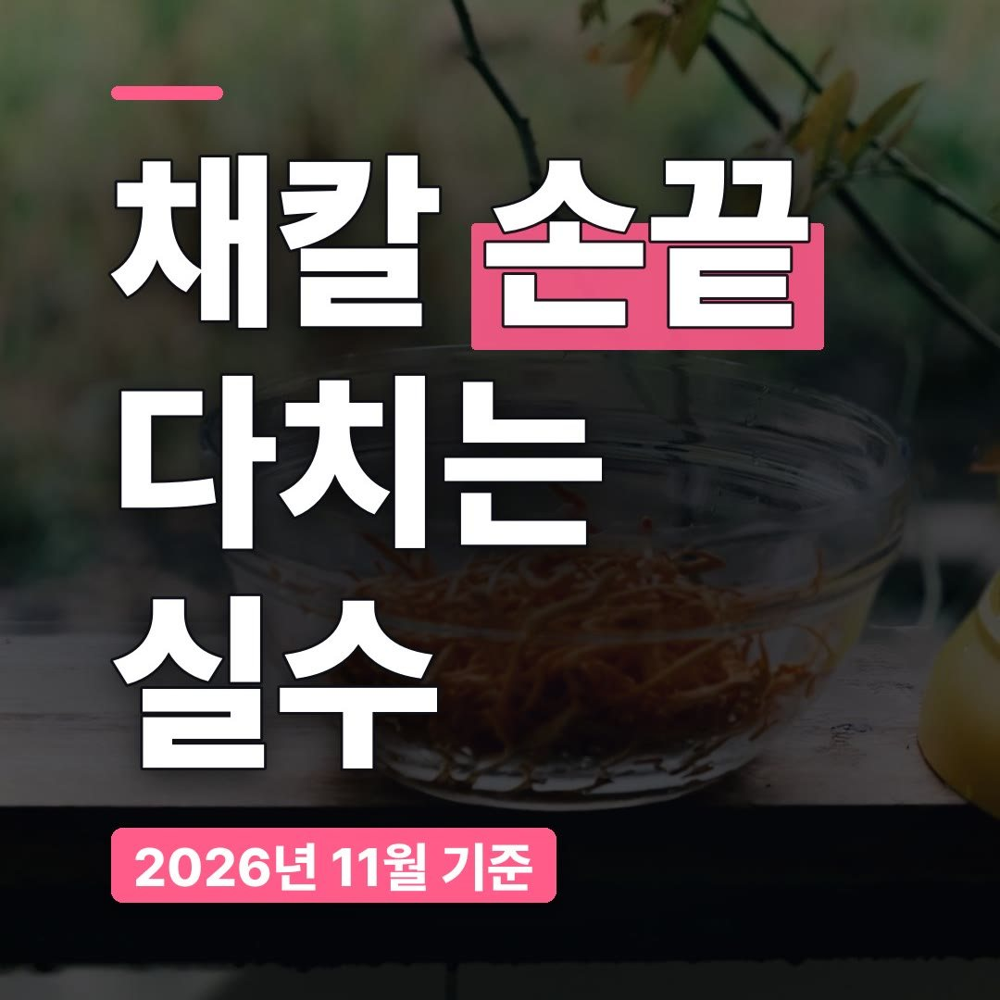
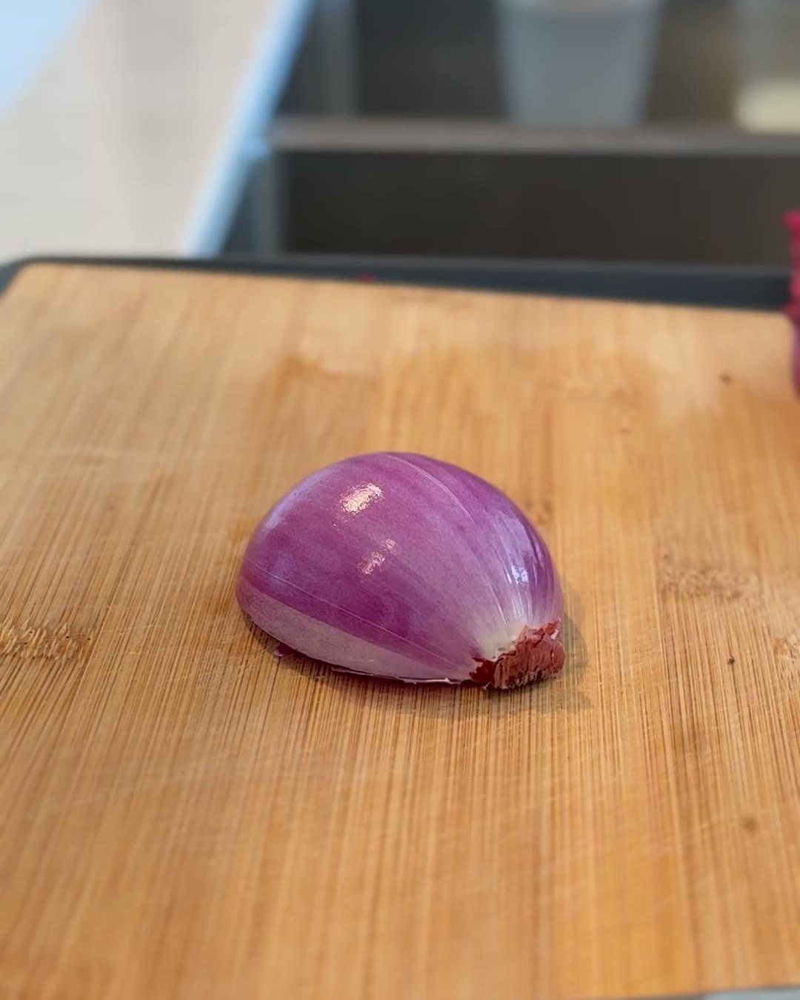
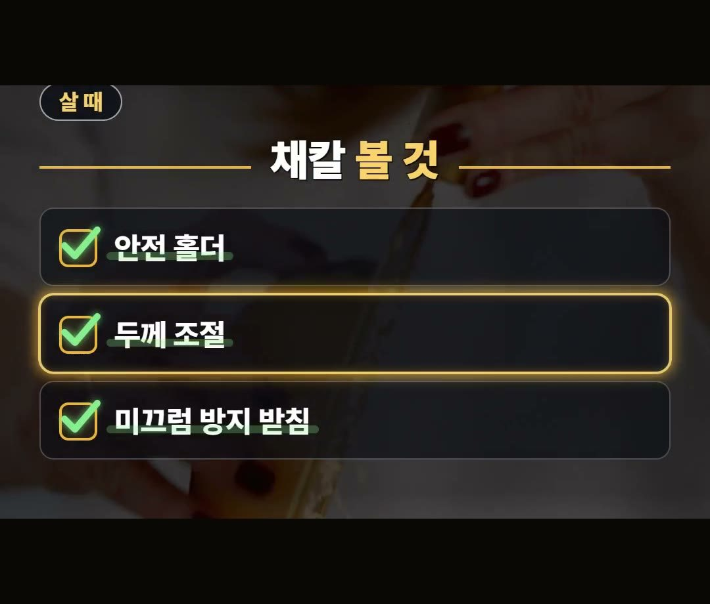
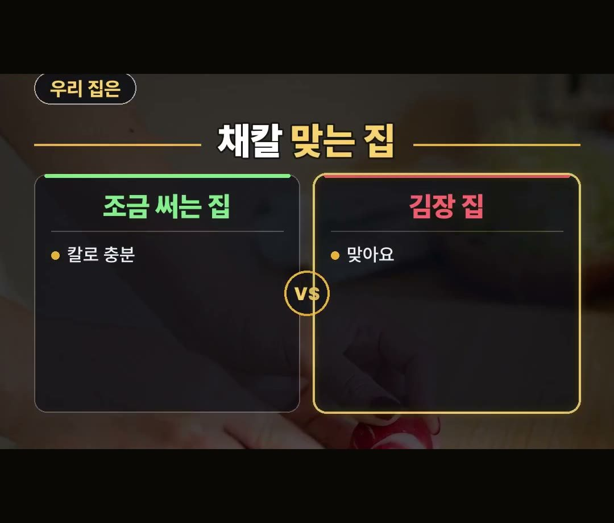
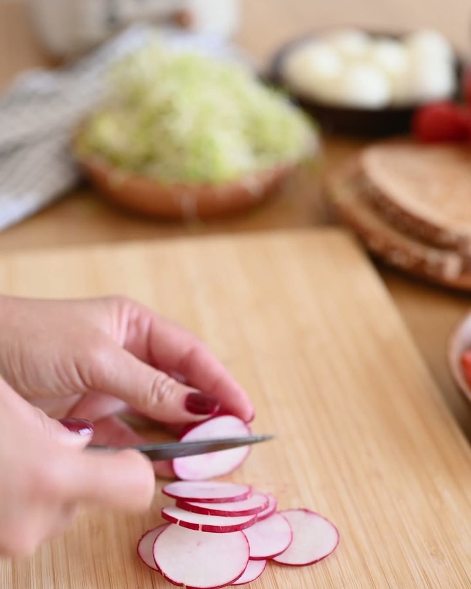

채칼 추천, 이런 집이면 사지 마세요 | 채칼 사용법과 안전 홀더
※ 이 글에는 제휴 링크가 포함되어 있으며, 링크를 통해 구매하시면 일정 수수료를 받을 수 있습니다. (가격은 같습니다)
※ 이 포스팅은 쿠팡 파트너스 활동의 일환으로, 이에 따른 일정액의 수수료를 제공받습니다.
칼로 채를 썰 때와 채칼로 채를 낼 때는 손이 가는 자리가 달라요.
칼은 손이 칼날 위에서 재료를 누르지만, 채칼은 재료를 칼날 쪽으로 밀어야 해서 재료가 짧아질수록 손끝이 칼날에 가까워집니다.
이 글에서는 채칼을 사기 전에 볼 점과 손끝을 지키는 채칼 사용법, 그리고 채칼이 필요 없는 집까지 정리했어요.
채칼은 안전 홀더부터 보세요!
무가 짧아져 끝까지 갈 때는 손 대신 안전 홀더가 재료를 잡게 하는 것, 이게 오늘 글의 핵심이에요.
가끔 조금 써는 집이라면 칼로 충분하다는 것도 같이 기억하세요 🥕

채칼 추천 전에, 손끝이 위험해지는 순간
김장철이 다가오면 무채나 당근채처럼 채를 한꺼번에 많이 내는 집이 늘어요.
그래서 이맘때 채칼을 찾는 분도 많은데요.
채칼은 재료를 칼날 위로 밀어서 채를 내는 도구예요.
처음에는 재료가 길어서 손과 칼날 사이가 떨어져 있어요.
그런데 무가 짧아지면 사정이 달라져요.
남은 조각을 끝까지 밀려고 하면 손이 칼날 쪽으로 가거든요.
채칼을 쓸 때 가장 조심해야 하는 때가 바로 이 마지막 몇 번이에요.

끝까지 갈 때 쓸 것은? 정답은 안전 홀더
재료가 짧아졌을 때 쓰는 도구가 안전 홀더예요.
안전 홀더는 손 대신 재료를 잡아 주는 도구라서, 재료를 홀더에 끼워 밀면 손가락을 칼날에서 떼어 둔 채로 밀 수 있어요.
- 재료가 길 때: 손과 칼날 사이가 떨어져 있어요
- 재료가 짧아질 때: 안전 홀더로 바꿔 잡아요
- 끝까지 갈 때: 안전 홀더를 쓰세요
안전 홀더를 쓸 때도 서두르지 말고 일정한 힘으로 천천히 미는 게 좋아요.
홀더가 있어도 칼날은 칼날이니까요.
채칼 살 때 볼 점과 채칼 사용법
채칼을 고를 때 볼 점을 우리 말로 세 가지로 정리했어요.
- 안전 홀더: 상자에 같이 들어 있는지
- 두께 조절: 굵은 채, 가는 채처럼 칼날을 바꿔 쓸 수 있는지
- 미끄럼 방지 받침: 밀 때 채칼이 흔들리지 않게 받쳐 주는지

칼날을 바꿔 끼우는 채칼이라면 굵은 채와 가는 채를 한 도구로 낼 수 있어요.
무채처럼 굵게 낼 때와 샐러드처럼 가늘게 낼 때 도구를 따로 꺼내지 않아도 되는 거죠.
채칼 사용법의 기본은 세 가지예요.
받침을 바닥에 단단히 놓고, 재료를 같은 힘으로 밀고, 재료가 짧아지면 바로 안전 홀더로 바꿔 잡는 것이에요.
이 순서만 지켜도 손끝을 칼날 가까이 두는 일을 줄일 수 있어요.
이런 집이면 채칼 사지 마세요
채칼이 모든 집에 맞는 건 아니에요.
쓰는 양에 따라 답이 달라져요.
- 조금 써는 집: 가끔 조금만 썬다면 칼로 충분해요. 채칼을 꺼내고 씻는 수고가 더 클 수 있어요
- 김장 집: 무채처럼 한 번에 많이 써는 집에는 채칼이 맞아요

결국 쓰는 양이 답이에요.
김장이나 반찬으로 채를 자주 내는 집이라면 김장 채칼을 하나 마련해 둘 만하고, 가끔 쓰는 집이라면 지금 있는 칼로도 충분해요.
채칼 추천 목록을 보기 전에 우리 집이 어느 쪽인지 먼저 떠올려 보세요.

후기에서 많이 나온 말
안전 홀더가 함께 든 손잡이 채칼 세트 상품의 쿠팡 후기를 보면, 가볍다는 말이 많아요.
무게가 가벼운 채칼은 꺼내 쓰고 다시 넣기가 편하다는 점에서 자주 쓰는 집에 잘 맞아요.
다만 가벼운 만큼 밀 때는 미끄럼 방지 받침을 단단히 놓고 쓰는 게 좋아요.
같은 채칼 추천이라도 우리 집이 김장을 하는지, 가끔 반찬 정도만 하는지에 따라 고를 물건이 달라진다는 것, 이 점만 기억해 두셔도 충분해요.
정리
- 채칼은 재료가 짧아질수록 손이 칼날 쪽으로 가요.
- 끝까지 갈 때는 안전 홀더를 쓰세요. 살 때는 안전 홀더, 두께 조절, 미끄럼 방지 받침을 보세요.
- 조금 써는 집은 칼로 충분하고, 김장처럼 많이 써는 집에 채칼이 맞아요.
링크는 아래에 모아 두었어요.
📌 2026년 11월 기준 정보예요. 가격은 시기에 따라 달라질 수 있어요.
사진·영상: Pexels (Klaus Nielsen, Kulbir, Lily Lili, MARIBEL ROSETE, Mikhail Nilov, Nicola Barts)